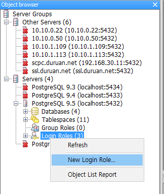
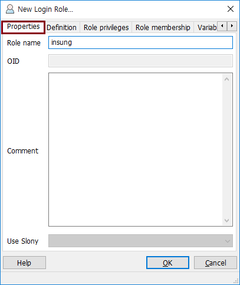
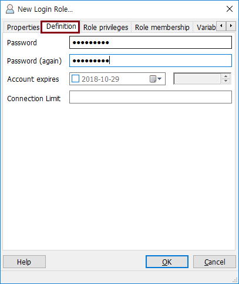
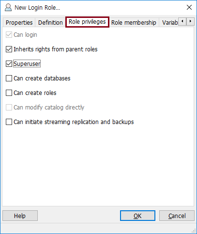
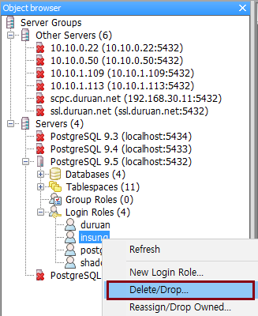

PostgreSQL 데이터베이스 구조
계정
-
postgres 에서 Login Role(계정) 이라는 개념으로 사용자를 관리함
-
Login Role 에는 유효기간(account expires), Connection limit 등을 지정할 수 있음
-
Login Role 에 권한을 부여할 수 있다. Superuser 권한은 create database, create roles 등 postgres 의 모든 권한을 가질 수 있음
계정 생성 방법
-
pgAdmin3 > Database > Login Roles > New Login Role... 선택

-
Properties 탭 > Role name 입력

-
Definition 탭 > Password 입력

-
Role privileges 탭 > Superuser 선택 후 OK 클릭

계정 삭제 방법
-
pgAdmin3 > Database > Login Roles > Delete/Drop... 선택

(만약 Database 를 사용하고있는 사용자면 삭제되지 않음)
Let's Prcactice
-
각자 account expires, role privileges 값 등을 설정해보자.
처음으로
이전
다음